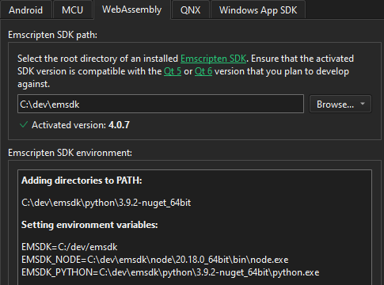
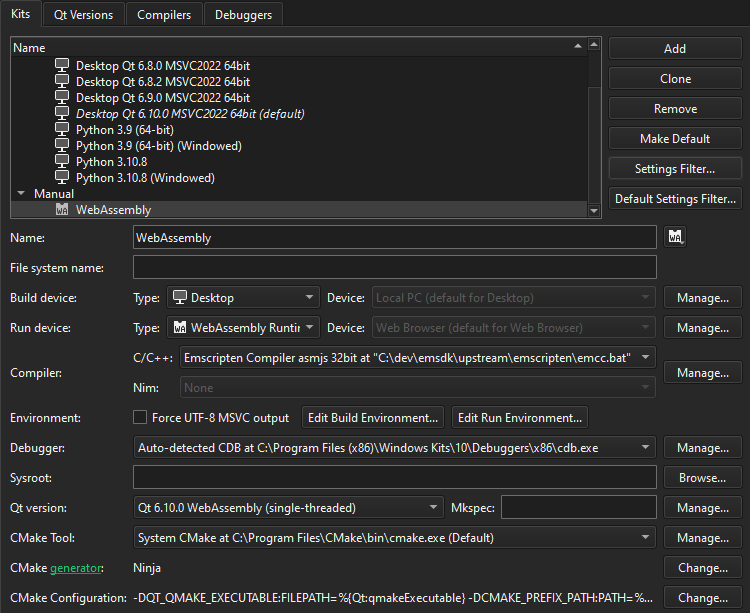

Build applications for the Web
WebAssembly is a binary format that allows sand-boxed executable code in web pages. This format is nearly as fast as native machine code. It is supported by all major web browsers.
Use Qt for WebAssembly to build your applications in WebAssembly format and deploy and run them on the local web browser. Change the web browser in the project's run settings.
Note: Enable the WebAssembly plugin to use it.
To build applications for the web and run them in a web browser, install Qt for WebAssembly with Qt Online Installer. It automatically adds a build and run kit to Qt Creator.
Set up WebAssembly development environment
To set up the development environment for WebAssembly:
- Go to Preferences > SDKs > WebAssembly.
- In Emscripten SDK path, enter the root directory where you installed
emsdk. - Qt Creator configures the Emscripten SDK environment for you if your Qt for WebAssembly version supports the
emsdk.
- Go to Preferences > Kits to check the WebAssembly kit that Qt Creator creates. If C/C++ does not show the Emscripten Compiler to use, check that emscripten is set up correctly.

See also Run applications in a web browser.